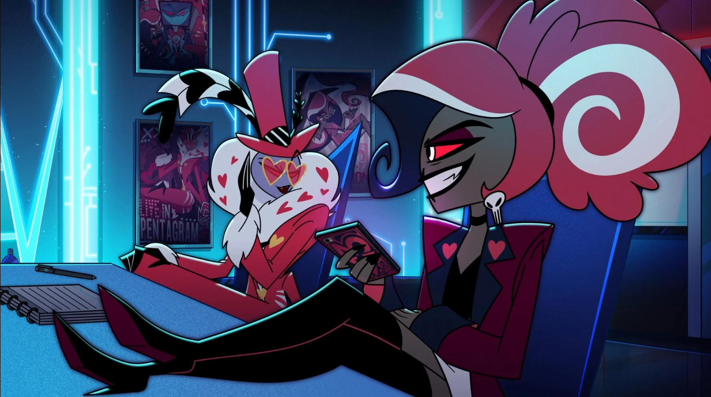
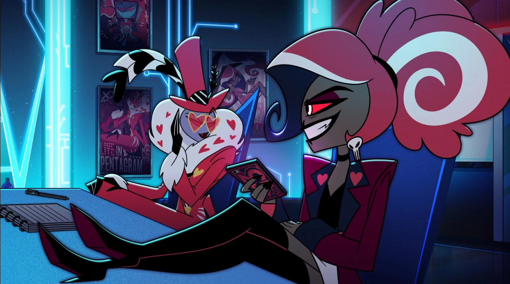

⛧ Velvette je členkou záporáckého tria The Vees a specialituje se na sociální sítě a módu. Je energetická a trendy. Vox díky ní zůstává updatovaný o dění v Pekle, na kterém pak může profitovat. Velmi si zakládá na svém vzhledu a nebojí se být drzá.
⛧ "♪ You've got it twisted. I'm not the one who needs a new attitude. Maybe you missed it, but I'm that #Bitch and I will do nothing less than what I please. Woo! I'm the backbone of the Vees. ♪"
⛧ Více informací zde!
 
